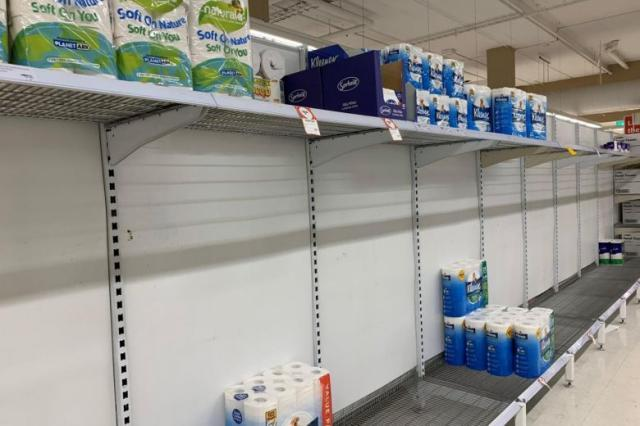

德国疫情日记⑦：德国人为什么不爱戴口罩？
原文链接 备份链接 体坛周报全媒体驻德国记者 杨子江 在北威疫情愈演愈烈的时候，巴伐利亚还是能买到消毒液的，我就曾在朋友圈秀过这边超市库存很多的消毒液，但是仅仅两天之后，当北威州的朋友恳请我去代买几瓶的时候，柜台上已经空空如也了。德国的媒 …
体坛周报全媒体驻德国记者 杨子江
巴伐利亚上上周末宣布进入灾难状态的，随之绝大多数商户和所有娱乐场所在周三关门。而就在巴伐利亚进入紧急状态之前的一天，我和爱人还必须带着儿子和女儿去看儿科医生，倒不是孩子们生病了，而是儿子要进行定期的身体检查，女儿则要定期打预防针，不定时按期完成这种程序性的工作，找你麻烦的可不仅仅是保险公司。
即便是灾难级的警告，儿科诊所也没人戴口罩。德国人依旧淡定，德国卫生部长施潘的名言就是：“病毒的灾害固然很大，但在社会上产生的对病毒的恐惧，带来的危害更大。”这句名言也如病毒般的侵蚀着德国人。
儿科医生Professor. Dr. Abt的手法很高明，女儿只是在挨针的那一刻嚎了一嗓子就不再哭泣了，然后就是例行的交谈。
“武汉是不是真的封城了？太不可思议了！”
“真的封城了，这是遏制病毒传播的最好办法。”
“你们是不是真的10天就建起了一座医院，能不能请他们为柏林修机场啊？”柏林新机场于2006年9月动工，计划在2011年启用，但中间无数次推迟，到现在都没修完，成了德国人的笑柄，雷神山和火神山的修建速度的确是德国人难以想象的。
太太善意地提醒医生应该戴口罩，医生说，不过是个小病毒而已，三周也就过去了。
我们说：“不可能，看看意大利的情况。”
医生说：“那不是意大利人嘛……你们在中国哪里啊？”
“我们是从天津回德国的，离武汉1000多公里呢，而且我们在中国的时间，基本也是处于自我隔离状态的，您不用担心。”
“我根本不担心，小病毒而已。”
这就是绝大多数德国人目前对新冠病毒的看法，在这段对话发生的时候，新冠病毒在德国的确诊者已经破万——在春日的慕尼黑的伊萨河畔，却依然有成群结队的人在晒太阳，英国公园里，到处是对酒当歌的德国人在聚堆儿。所谓的灾难状态，只不过给了更多人更宽裕的时间团聚而已，如果这种理念不被改变，想在短时间内战胜新冠病毒几乎不可能。

尽管即便进入紧急状态之后，巴伐利亚的超市也不会关门，但我们还是决定再进行最后一次囤货——毕竟家有余粮，心中不慌嘛。最新数据显示，即便在欧洲大陆，地区和文化差异也很大，面对隔离和闭关，法国人抢红酒和避孕套，荷兰人抢奶酪，德国人抢面条和卫生纸。
德国媒体报道说，最令人震撼的是，加班加点7X24小时开工的工厂，是厕纸厂（我以为是口罩厂）。北威州纸业龙头公司Hakle全天24小时不停工，即便在周末和公共假期也维持生产，这意味着每天都可以生产1500托盘，也就是150万卷卫生纸，是疫情之前的1.5倍。每天都有50多辆卡车满载厕纸从Hakle的公司出发，将这些珍贵的、民众们翘首期盼的厕纸运往全德国。
由于德国物价较为便宜，因此在法国“封国”之前，法国阿尔萨斯重灾区的人们，已经冲到德国把德国的避孕套给抢完了。德国专家认为，这次疫情可能会持续2年的时间，彻底消灭病毒基本是不可完成的任务。太太已经开始在屋里培育蔬菜种子了，等到德国春暖花开的时候就可以移植了，但当务之急，我们还是到超市买了些红酒，抢了些奶酪，又购进了一批卫生纸……
原文链接 备份链接 体坛周报全媒体驻德国记者 杨子江 在北威疫情愈演愈烈的时候，巴伐利亚还是能买到消毒液的，我就曾在朋友圈秀过这边超市库存很多的消毒液，但是仅仅两天之后，当北威州的朋友恳请我去代买几瓶的时候，柜台上已经空空如也了。德国的媒 …
原文链接 备份链接 体坛周报全媒体驻德国记者 杨子江 其实早在笔者回德国之前，意大利的疫情已经相当严重了，而国内的疫情已经在相当大的程度上得到了控制。德国很多朋友对我说，“你们先在国内再休整一段时间吧，德国迟早疫情也会像意大利那样蔓延 …
原文链接 备份链接 题图来自网络 昨天我们给大家介绍了疫情下的美国的真实情况，今天我们移步到德国。截至3月7日晚，德国共有15个州（共16）出现新冠状肺炎，确诊847例，无死亡。 疫情下的德国纪实 文／大梨 在这场对抗新冠病毒的战争中，武 …
原文链接 备份链接 图片来源：图虫 特约作者：钱伯彦 陈英 “ 笔者尝试戴上口罩，但很快引起周遭人群窃窃私语。由于德国出现过乘客向列车员“举报”有疑似病例而逼停整列高铁的先例，笔者最终选择放弃继续佩戴口罩。 ” 新冠病毒的爆发在欧洲各国至 …
原文链接 备份链接 以下文章来源于地球青年图鉴 ，作者地青 △ “身在疫国人”第6期德国街访完整视频 截至德国当地时间3月18日19点，德国确诊人数有11979人，死亡28人。3月18日，德国总理默克尔发表演讲：“这是二战以来德国面临最 …